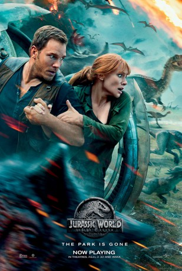

Alternativ: Jurassic World: Fallen Kingdom
 
 IMDB-Wertung: 6.3 / 10
IMDB-Wertung: 6.3 / 10  Metascore:
Metascore: 
Nach den Ereignissen in dem Themenpark Jurassic World auf der Insel Isla Nublar können die Dinosaurier seit vier Jahren frei leben, bis ein Vulkanausbruch ihre Existenz bedroht. Die frühere Parkmanagerin Claire Dearing hat nun die Dinosaur Protection Group (DPG) gegründet – eine Organisation zum Schutz der Dinosaurier. Sie engagiert Owen Grady, einen ehemaligen Dinosaurier-Trainer, welcher beim Park gearbeitet hatte, um ihr zu helfen, die restlich verbliebenen Dinosaurier von der Insel zu retten. Owen will außerdem Blue ausfindig machen, die letzte Überlebende der vier Raptoren, die er einst trainiert und großgezogen hatte. Außerdem bricht ein neu geschaffener Gen-Hybrid namens Indoraptor aus.
Jahr: 2018
Dauer: 128 Minuten
FSK: 12
Land: USA Studio: Universal PicturesTonspuren: DTS - ,
Untertitel: Deutsch, Englisch,
Auflösung: 1080p (1920x1080) Größe: 12595 MB
Genre: Action, Sci-Fi, Abenteuer
Regisseur: J.A. Bayona
Drehbuch: Derek Connolly, Colin Trevorrow, Michael Crichton
Soundtrack: Michael Giacchino
Darsteller:
Datei: X:\5-Pentalogie(A-Z)\Jurassic Park\Jurassic World Das gefallene Königreich (2018, FSK12, 1920x1080) 3D.mkv seit 18.09.2018
Festplatte: HD Collection-3(N-Z)-6(A-Z)
 Es gibt insgesamt 11 Filme in der Gruppe '5-Pentalogie(A-Z)\Jurassic Park'
Es gibt insgesamt 11 Filme in der Gruppe '5-Pentalogie(A-Z)\Jurassic Park'